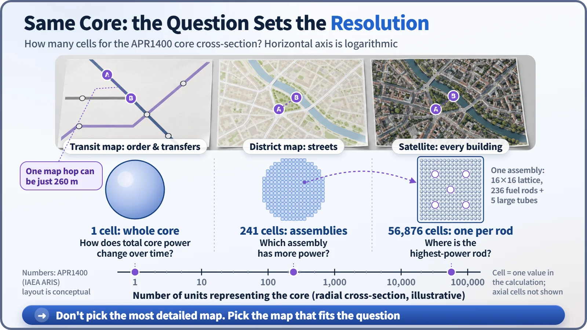
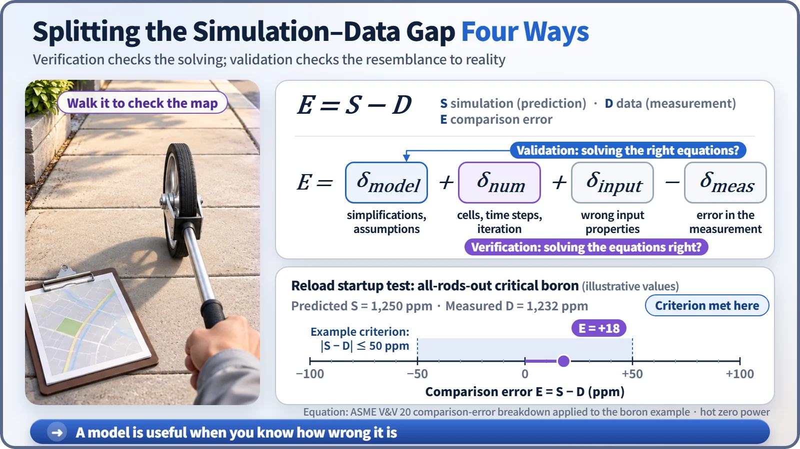

Modeling, Simulation & Computation · 251
Trust the Tube Map, Walk 260 Metres — A Model Is a Scaled-Down Map of Reality
Like a transit map that drops real distances on purpose, a good model keeps only what its question needs, and we trust it only once we know how wrong it is.
A model is a simplified representation of a real system that keeps only what a particular purpose needs. Like a transit map that throws away real distances on purpose, a good nuclear model is not the most detailed one but the one that fits the question, and it is trusted only after verification ("did we solve the equations right?") and validation ("did we solve the right equations?"). [1]
The one-stop ride that should have been a walk
Picture your first day in London. You want to get from Leicester Square to Covent Garden, so you unfold the Underground map: one stop. You buy a ticket, go down the long stairs, wait, board, and the doors have barely closed before the next station is announced. Back at street level, you can see the station you just left at the end of the lane. The two stations are only about 260 metres apart, the closest pair on the whole London Underground. Walking would have taken three or four minutes. [2]
Was the map wrong? Not at all. The Tube map that Harry Beck designed in 1933 throws away real distances and directions on purpose. All it keeps is the order of the stations and where the lines connect. Ask it "where do I change trains?" and it answers far faster than a satellite photo. Ask it "how many minutes on foot?" and it is simply the wrong map. In nuclear engineering, a model is exactly this kind of map.
A map is a set of choices, not a copy
A model is a bundle of relationships and assumptions, and two decisions go into it. Abstraction decides what to keep and what to leave out. Resolution decides how finely to divide what you keep.
Take a reactor core. The core of the South Korean APR1400 reactor holds 241 fuel assemblies (bundles of fuel rods), and each assembly contains 236 fuel rods: 56,876 rods in all. [3]

To know how the total power of the core rises and falls over time, treating the whole core as a single lump is enough. To ask which assembly produces more power, you need one cell per assembly, 241 cells. To find the single highest-power fuel rod, you have to go down to every rod: 56,876 cells. A "cell" is not a physical partition; it is a unit the calculation represents with a single value. Divide the core along its height as well, and the count grows by a factor of several tens.
One core, three maps
That is why nuclear plants use different models of the very same core for different jobs.
| Model | What it must get right | What it simplifies |
|---|---|---|
| Operator training simulator | The whole plant, from reactor to turbine and grid, responding at the same speed as the real plant | Fine spatial detail, traded for real-time speed |
| Core design | Assembly- and rod-level power so fuel burns evenly over a cycle of about 18 months | Piping and steam generators, reduced to inlet temperature and flow |
| Safety analysis | Pressure, temperature and water and steam flow through the whole system in hypothetical accidents | Uncertain parts, assumed in the direction that makes results worse |
An operator training simulator is a full-scale replica of the real main control room. If computing one second takes ten, training is impossible, so it trades some detail for speed. A core design model is the opposite: spatial resolution is everything, while the rest of the plant shrinks to a few boundary conditions. A safety analysis model follows a hypothetical accident, such as coolant leaking out, and builds in margin by assuming the worse outcome wherever something is uncertain. [4]
Which is the "real" model? Three different questions, so three right answers. And why not use the most detailed model for everything? Unnecessary detail adds not only computing time but also more input values to fill in, and more room for mistakes. Try finding a transfer station on a satellite photo and you will get more lost, not less.
The map, the printing press and the walk
The model is the map's design: the equations and assumptions that decide what is drawn and how. The computer code is the program that lets a computer solve those equations, the printing press that turns out the map. A simulation is running that code under specific conditions to reproduce how things change over time, like spreading out the map and following a route. Split this way, there are two places it can go wrong: the press might misprint the map, or the design itself might not match reality.
You only know a map is right by walking it
Verification asks, "Did we solve the equations right?" It checks for coding mistakes and for the errors that come from dividing the problem into cells. Validation asks, "Did we solve the right equations?": for the intended use, does the model resemble reality closely enough? It is checked against experiments and plant measurements. [1]
Call the computed value S and the measured value D, and write the difference as E = S − D. Four things are mixed into it: error from the model's simplifications, numerical error from solving in cells, error in the input values, and error in the measurement itself. Verification is mainly about shrinking and assessing the numerical error; validation estimates how big the model error is, allowing for the rest. A single comparison can't neatly separate the four terms, so the judgment is built up over many tests. [5]

Nuclear plants have a regular slot for validation: the startup tests performed every time the fuel is reloaded. With all control rods withdrawn, operators measure the boron concentration in the coolant at which the reactor just becomes critical (the chain reaction exactly sustains itself) and compare it with the design model's prediction. One example of a review criterion under the US standard is "within ±50 ppm of the predicted value." With illustrative numbers, a prediction of 1,250 ppm and a measurement of 1,232 ppm differ by 18 ppm, so for this item the map is drawing this core well. Outside the criterion, the cause is investigated first. [6]
You can still find your way with a wrong map
The statistician George Box put it this way: "All models are wrong, but some are useful." A model is a simplification, so it is bound to differ from reality somewhere. The real question is not "Is it right?" but "Is it right enough for this purpose, and do we know how wrong it is?" [7]
You don't have to throw away the Tube map because it hid the 260 metres at Leicester Square. When you walk, you unfold a different map. Nuclear plant models work the same way: choose the map that fits the purpose, and keep walking the route to check how accurate it is.
Key takeaways
A model keeps only what its purpose needs; abstraction and resolution are set by the question. Training simulators, core design and safety analysis model the same core differently, and every model earns trust through verification, validation and knowing the size of its error.